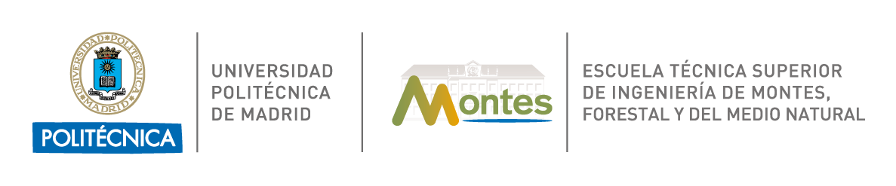

Inicio
Presentación
Te doy la bienvenida a mi web personal. Soy Alejandro Jiménez Cano, y soy investigador y profesor en la Universidad Politécnica de Madrid. Hasta el momento, mi investigación se ha centrado en estudiar propiedades generales y estructurales de teorías de gravedad más allá de Relatividad General. He trabajado principalmente en soluciones y en estabilidad de varias teorías como gravedad cúbica y teorías formuladas en el llamado marco Métrico-Afín. Tengo multitud de intereses dentro del campo de la gravitación como condiciones de pegado, estabilidad de agujeros negros, teorías TDiff y geometría diferencial.
En lo que se refiere a mi actividad docente, soy parte de la Unidad Docente de Física de la ETSI de Montes, Forestal y del Medio Natural y doy clases de Física General en el Grado en Ingeniería del Medio Natural y en el Grado en Ingeniería en Tecnologías Ambientales.
También me apasiona la divulgación y participo en actividades de este tipo con los más jóvenes siempre que tengo oportunidad, haciéndoles ver algunos de los aspectos más profundos de las teorías modernas de gravedad.
Mapa del sitio
- Investigación: mis publicaciones y contribuciones en congresos.
- Docencia: material y todo lo relevante sobre los cursos que imparto.
- Divulgación: mis charlas y talleres divulgativos.
- Material extra: notas y reviews personales, mi tesis doctoral...
- CV: mi currículum vitae.
- Enlaces: enlaces de interés.
Canal de Youtube
Echa un vistazo a mi canal de youtube:
|
|
DIMENSIÓN GAMMA |
Contacto
|
